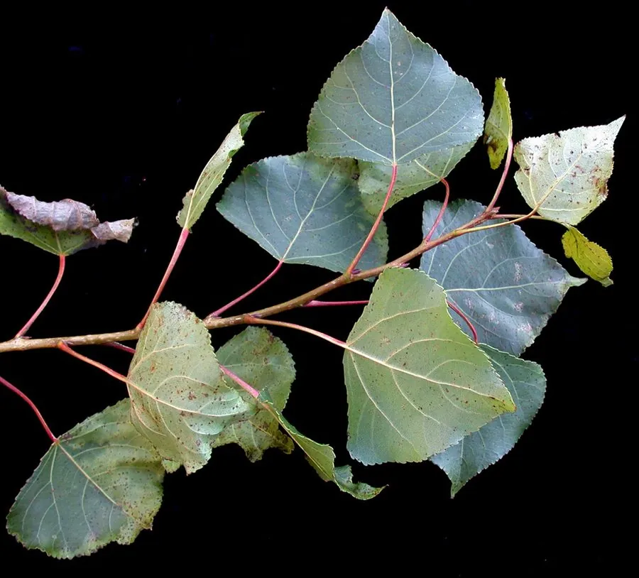

乔木 · 植物界
钻天杨 Populus nigra

原产欧洲与西亚的落叶乔木，枝条向上直立、树冠狭长如塔，生长迅速，是北方常见的行道与防护树种。
- 分类
- 门被子植物门纲木兰纲目杨柳目科杨柳科属杨属
- 栖息环境
- 海拔 1500 米以下的平原、路旁与农田，喜光耐寒耐旱
- 地理分布
- 原产欧洲南部至西亚，中国北方及长江流域栽培
- 保护级别
- 暂无评估；中国未列入国家重点保护野生植物名录
物种志
钻天杨为落叶乔木，高可达 30 m，树皮灰褐色、纵裂；枝条向上直立、贴近树干，树冠狭长呈塔形或圆柱形，是它最醒目的特征；叶片菱形至三角形，边缘具锯齿，叶柄扁平。花期 4 月，葇荑花序下垂，雌雄异株；蒴果成熟后开裂，种子带白色绒毛。
钻天杨原产欧洲南部至西亚，中国北方及长江流域栽培，喜光、耐寒、耐旱，适应性强，生长迅速。因树冠狭长、枝条直立，适合密植，是北方农田防护林与行道树的常用树种；木材轻软，可供建筑、造纸与火柴用；树皮可提取栲胶。钻天杨寿命较短，易受杨树天牛等蛀干害虫危害，栽培中需注意更新与防治。
形态与习性
- 株高可达 30 m，树冠狭长塔形
- 枝条向上直立、贴近树干
- 花期4 月，葇荑花序下垂
- 果期5 月，蒴果开裂飘絮
- 光照喜光，不耐长期荫蔽
- 主要用途农田防护林与行道树、建筑与造纸用材
趣味知识
- 钻天杨的枝条向上直立、贴近树干，树冠狭长如塔，因此得名。
- 钻天杨生长迅速，是北方农田防护林与行道树的常用树种。
- 钻天杨寿命较短，易受杨树天牛危害，需要及时更新。